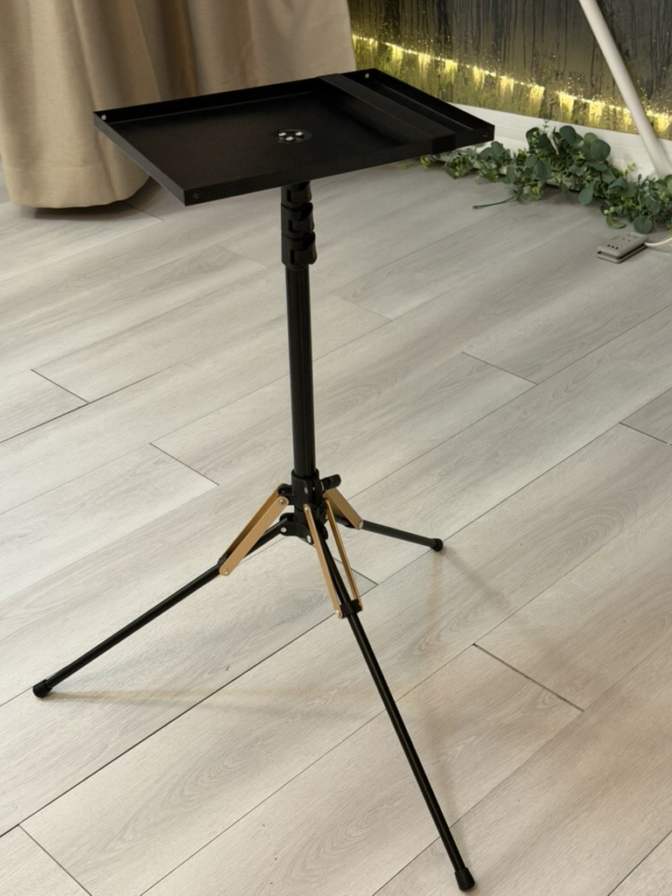
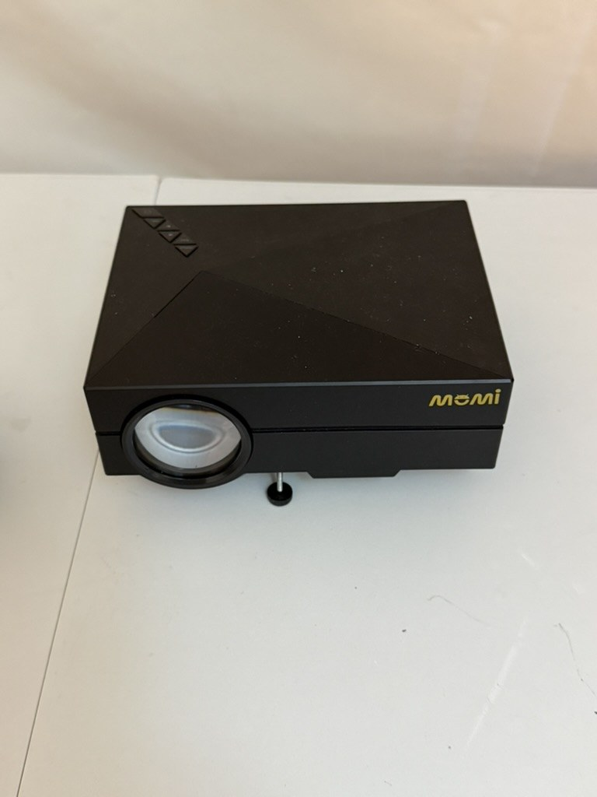
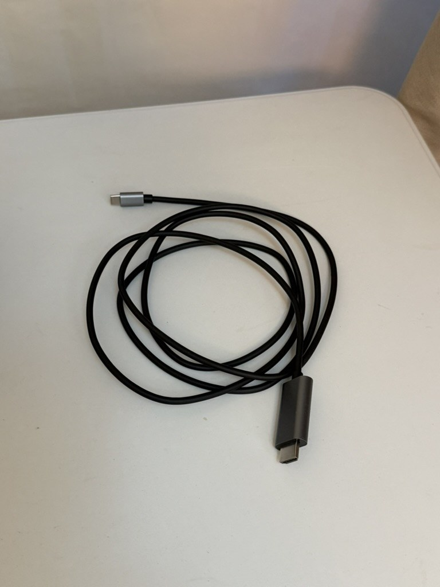

步驟 1｜架好投影機腳架
請使用現場提供的三腳投影機架。打開腳架、調整高度後，把投影機放在上方平台，並確認底座穩固、對準帳內投影布幕或牆面。
使用流程很單純：腳架放好投影機 → Type-C 線接手機與投影機 → 藍牙喇叭連手機出聲。建議先確認手機有 Type-C 孔，並支援影像輸出（多數 Android 手機可；iPhone 通常需另備轉接，現場以 Type-C 線為主）。

請使用現場提供的三腳投影機架。打開腳架、調整高度後，把投影機放在上方平台，並確認底座穩固、對準帳內投影布幕或牆面。

將 momi 投影機放上腳架，接上電源後開機。可用機身前方腳座微調俯仰角度，讓畫面端正。鏡頭請對準布幕，避免被人或家具擋住。

使用現場的 Type-C 轉 HDMI 線：
連接成功後，手機畫面會顯示在投影機上，即可播放影片、照片或串流內容。
畫面由投影機負責，聲音請用現場的 JBL 藍牙喇叭：開啟喇叭電源，在手機藍牙設定中搜尋並連接喇叭，即可聽到影片或音樂聲音。
喇叭上方有音量加減與播放／暫停鍵，可直接調整音量。